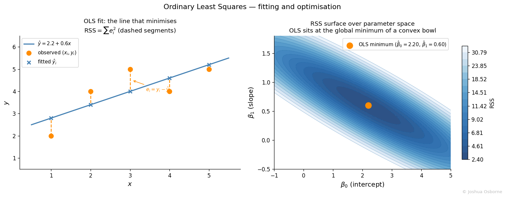

Statistics Notes
OLS derivation, model assumptions, standard errors, t-test, and R² from scratch.
Contents
A straightforward way of predicting a dependent variable from a single predictor.
The primary driving factor behind linear regression is the ability to predict one value from another. Given a set set of points \((x_1,y_1),(x_2,y_2),...,(x_n,y_n)\) , we want to find a function that approximates y. The simplest solution? A line. You may ask, what are the benefits of using a line as opposed to a polynomial or some other function.
Well it is easily interpretable. It is easy to see the effect on the dependent variable (y) when the independent variable (x) moves. Because it only has two parameters, it is also easy to estimate. Also, many relationships are close enough to being linear (look at the fit between the body mass and flipper length of penguins in What is machine learning). It also has an analytical answer for the best fit line.
Simple linear regression models the conditional expectation of \(Y\) given \(X = x\) as a straight line:
\[y_i = \beta_0 + \beta_1 x_i + \varepsilon_i, \quad i = 1, \ldots, n\]
where \(\beta_0\) is the intercept, \(\beta_1\) is the slope, and \(\varepsilon_i\) is a mean-zero random error. OLS estimates \(\beta_0\) and \(\beta_1\) by minimising the residual sum of squares.
| Symbol | Type | Meaning |
|---|---|---|
| \(y_i\) | scalar | observed response for the \(i\)-th data point |
| \(x_i\) | scalar | observed predictor for the \(i\)-th data point |
| \(X\) | vector | the full collection of predictor observations \((x_1, x_2, \ldots, x_n)\) |
| \(\hat{y}_i\) | scalar | model prediction for observation \(i\), equal to \(\beta_0 + \beta_1 x_i\) |
| \(\varepsilon_i\) | scalar | true unobservable error for observation \(i\); \(\mathbb{E}[\varepsilon_i] = 0\) |
| \(e_i\) | scalar | observed residual, \(e_i = y_i - \hat{y}_i\); the computable stand-in for \(\varepsilon_i\) |
| \(\beta_0, \beta_1\) | scalars | true intercept and slope parameters |
| \(\hat{\beta}_0, \hat{\beta}_1\) | scalars | OLS estimates of \(\beta_0\) and \(\beta_1\) |
| \(n\) | integer | number of observations |
| \(\bar{x}, \bar{y}\) | scalars | sample means of the predictor and response |
| \(S_{xx}\) | scalar | sum of squared deviations of \(x\): \(\sum(x_i-\bar x)^2 = (n-1)s_x^2\) |
| \(\sigma^2\) | scalar | variance of the true errors; estimated by \(\hat{\sigma}^2 = \text{RSS}/(n-2)\) |
| \(\text{SE}(\hat{\beta}_j)\) | scalar | standard error of OLS estimate \(\hat{\beta}_j\) |
| \(t\) | scalar | t-statistic used to test \(H_0: \beta_1 = 0\) |
| \(\text{TSS}\) | scalar | total sum of squares, \(\sum(y_i - \bar{y})^2\) |
| \(R^2\) | scalar | proportion of variance in \(Y\) explained by the model |
The key equation for doing a linear fit is the following: \[Y \approx \beta_0 + \beta_1X\]
There is an important distinction between the true error \(\varepsilon_i\) and the observed residual \(e_i\). The true error \(\varepsilon_i = y_i - (\beta_0 + \beta_1 x_i)\) involves the unknown true parameters and is never observable. The residual \(e_i\) substitutes the fitted values and is what we can actually compute:
\[e_i = y_i - \hat{y}_i = y_i - \hat\beta_0 - \hat\beta_1 x_i\] Using the error we can also define the Residual Sum Squared: \[RSS=e_1^2+e_2^2+...+e_n^2\] Using The RSS we can now find the analytical solution for the best fit line for our simple linear fit. Let’s first start by taking the derivative of the RSS with respect to \(\beta_0\): \[\frac{d(RSS)}{d\beta_o}=0=-2\sum_{i=1}^{n}(y_i-\beta_0-\beta_1x_i)\] \[0=\sum_{i=1}^{n}y_i-n\beta_0-\sum_{i=1}^{n}\beta_1x_i\] \[n\beta_0=\sum_{i=1}^{n}y_i-\sum_{i=1}^{n}\beta_1x_i\] \[\beta_0=\bar y-\beta_1 \bar x\] The above equation is the analytical solution for the \(\beta_0\) parameter. Now, we move on to deriving \(\beta_1\): \[\frac{d(RSS)}{d\beta_1}=0=-2\sum_{i=1}^{n}(y_i-\beta_0-\beta_1x_i)x_i\] \[\frac{d(RSS)}{d\beta_1}=0=\sum_{i=1}^{n}(y_i-(\bar y-\beta_1 \bar x)-\beta_1x_i)x_i\] \[\frac{d(RSS)}{d\beta_1}=0=\sum_{i=1}^{n}(y_i-\bar y)x_i - \beta_1 \sum_{i=1}^{n}(x_i - \bar x)x_i\] \[\beta_1 \sum_{i=1}^{n}(x_i - \bar x)x_i = \sum_{i=1}^{n}(y_i-\bar y)x_i\] I now use the fact that the sum of the deviation from the mean is equal to zero, that is \(\sum_{i=1}^{n}x_i-\bar x =0\):
\[\beta_1 \sum_{i=1}^{n}(x_i - \bar x)x_i - \bar x \sum_{i=1}^{n}(x_i - \bar x) = \sum_{i=1}^{n}(y_i-\bar y)x_i\] \[\beta_1 \sum_{i=1}^{n}(x_i - \bar x)^2 = \sum_{i=1}^{n}(y_i-\bar y)x_i\] Now, you can check this your self by multiplying it out, but \((y_i-\bar y)x_i = (y_i-\bar y)(x_i - \bar x)\), and so now we have: \[\beta_1 \sum_{i=1}^{n}(x_i - \bar x)^2 = \sum_{i=1}^{n}(y_i-\bar y)(x_i - \bar x)\] \[\beta_1 = \frac{\sum_{i=1}^{n}(y_i-\bar y)(x_i - \bar x)}{\sum_{i=1}^{n}(x_i - \bar x)^2}\] And with that we have shown how to analytically derive the values for \(\beta_0\) and \(\beta_1\).
OLS requires the following conditions to produce valid estimates and inference.
| # | Assumption | What it means |
|---|---|---|
| 1 | Linearity | \(\mathbb{E}[Y \mid X = x] = \beta_0 + \beta_1 x\); the true relationship is linear in \(x\) |
| 2 | Independence | observations \((x_i, y_i)\) are independent of each other |
| 3 | Homoscedasticity | \(\text{Var}(\varepsilon_i) = \sigma^2\) is constant across all \(i\) |
| 4 | Zero mean errors | \(\mathbb{E}[\varepsilon_i] = 0\) for all \(i\) |
| 5 | Normality | \(\varepsilon_i \sim \mathcal{N}(0, \sigma^2)\) |
Assumptions 1-4 are the Gauss-Markov conditions: under these alone, OLS is the Best Linear Unbiased Estimator (see Gauss-Markov Theorem). Assumption 5 is additionally required for the t-tests and confidence intervals below to be exact in finite samples. In large samples the t-distribution results hold approximately by the Central Limit Theorem even without normality.
Fitting a line gives you \(\hat\beta_0\) and \(\hat\beta_1\), but these are estimates computed from one sample. Inference quantifies how uncertain those estimates are.
Define \(S_{xx}\) as the sum of squared deviations of \(x\) from its mean:
\[S_{xx} = \sum_{i=1}^{n}(x_i - \bar x)^2\]
This is not the sample variance. The sample variance is \(s_x^2 = S_{xx}/(n-1)\), so \(S_{xx} = (n-1)\,s_x^2\). The \((n-1)\) cancels between numerator and denominator when writing \(\beta_1 = {\text{Cov}}(X,Y)\,/\,{\text{Var}}(X)\), which is why both forms are equivalent.
Both derivations follow the same idea: write the estimator as a linear combination of the \(y_i\)’s, then apply the variance formula using independence and homoscedasticity.
Start by expanding the numerator of \(\hat\beta_1\) and dropping \(\bar y\). The \(\bar y\) term vanishes because the deviations from the mean always sum to zero:
\[\sum_{i=1}^{n}(x_i - \bar x)(y_i - \bar y) = \sum_{i=1}^{n}(x_i-\bar x)y_i - \bar y\underbrace{\sum_{i=1}^{n}(x_i-\bar x)}_{=\,0} = \sum_{i=1}^{n}(x_i-\bar x)y_i\]
This lets us write \(\hat\beta_1\) as a weighted sum of the responses:
\[\hat\beta_1 = \frac{\sum_{i=1}^{n}(x_i-\bar x)\,y_i}{S_{xx}} = \sum_{i=1}^{n} c_i\, y_i, \quad c_i = \frac{x_i - \bar x}{S_{xx}}\]
Since the \(y_i\) are independent with \(\text{Var}(y_i) = \sigma^2\):
\[\text{Var}(\hat\beta_1) = \sum_{i=1}^{n} c_i^2\,\sigma^2 = \sigma^2 \sum_{i=1}^{n}\frac{(x_i-\bar x)^2}{S_{xx}^2} = \sigma^2 \cdot \frac{S_{xx}}{S_{xx}^2}\]
\[\boxed{\text{SE}(\hat\beta_1)^2 = \frac{\sigma^2}{S_{xx}} = \frac{\sigma^2}{\sum_{i=1}^{n}(x_i - \bar x)^2}}\]
Now for \(\text{Var}(\hat\beta_0)\):
Since \(\hat\beta_0 = \bar y - \hat\beta_1 \bar x\), it is also linear in the \(y_i\)’s:
\[\hat\beta_0 = \sum_{i=1}^{n}\frac{1}{n}\,y_i - \bar x\sum_{i=1}^{n} c_i\, y_i = \sum_{i=1}^{n} d_i\, y_i, \quad d_i = \frac{1}{n} - \frac{\bar x(x_i - \bar x)}{S_{xx}}\]
Expanding \(\sum d_i^2\) and using \(\sum(x_i - \bar x) = 0\):
\[\sum_{i=1}^{n} d_i^2 = \underbrace{\sum_{i=1}^{n}\frac{1}{n^2}}_{1/n} - \frac{2\bar x}{nS_{xx}}\underbrace{\sum_{i=1}^{n}(x_i-\bar x)}_{=\,0} + \frac{\bar x^2}{S_{xx}^2}\underbrace{\sum_{i=1}^{n}(x_i-\bar x)^2}_{=\,S_{xx}} = \frac{1}{n} + \frac{\bar x^2}{S_{xx}}\]
\[\boxed{\text{SE}(\hat\beta_0)^2 = \sigma^2\!\left[\frac{1}{n} + \frac{\bar x^2}{\sum_{i=1}^{n}(x_i - \bar x)^2}\right]}\]
In practice \(\sigma^2\) is unknown and is replaced by \(\hat\sigma^2 = \text{RSS}/(n-2)\). The denominator is \(n-2\) because fitting a line uses up two degrees of freedom (\(\beta_0\) and \(\beta_1\)).
t-test for the slope
The most important test in simple linear regression is whether the predictor is useful at all:
\[H_0: \beta_1 = 0 \quad \text{vs} \quad H_1: \beta_1 \neq 0\]
The test statistic is:
\[t = \frac{\hat\beta_1}{\text{SE}(\hat\beta_1)} \sim t_{n-2} \quad \text{under } H_0\]
A small p-value gives evidence that \(\beta_1 \neq 0\), meaning \(x\) carries real information about \(y\).
Confidence intervals
A 95% confidence interval for each parameter is:
\[\hat\beta_j \pm t_{n-2,\,0.025} \cdot \text{SE}(\hat\beta_j)\]
Goodness of fit: \(R^2\)
The standard summary of fit is:
\[R^2 = 1 - \frac{\text{RSS}}{\text{TSS}}, \quad \text{TSS} = \sum_{i=1}^{n}(y_i - \bar y)^2\]
\(R^2 \in [0, 1]\) measures the fraction of variance in \(Y\) that the model explains. In simple linear regression specifically, \(R^2 = r^2\) where \(r\) is the Pearson correlation between \(X\) and \(Y\). For a full treatment, including limitations and generalizations to other models, see R-squared.
Suppose we observe five paired measurements:
| \(i\) | \(x_i\) | \(y_i\) |
|---|---|---|
| 1 | 1 | 2 |
| 2 | 2 | 4 |
| 3 | 3 | 5 |
| 4 | 4 | 4 |
| 5 | 5 | 5 |
Step 1 - compute the means.
\[\bar x = \frac{1+2+3+4+5}{5} = 3, \qquad \bar y = \frac{2+4+5+4+5}{5} = 4\]
Step 2 - compute \(\beta_1\).
\[\sum_{i=1}^{5}(x_i - \bar x)(y_i - \bar y) = (-2)(-2)+(-1)(0)+(0)(1)+(1)(0)+(2)(1) = 6\]
\[\sum_{i=1}^{5}(x_i - \bar x)^2 = 4+1+0+1+4 = 10\]
\[\beta_1 = \frac{6}{10} = 0.6\]
Step 3 - compute \(\beta_0\).
\[\beta_0 = \bar y - \beta_1 \bar x = 4 - 0.6 \times 3 = 2.2\]
Result: \(\hat y = 2.2 + 0.6\,x\).
A one-unit increase in \(x\) is associated with an average increase of \(0.6\) in \(y\). When \(x = 0\) the model predicts \(y = 2.2\).
Step 4 - compute the residuals and RSS.
| \(i\) | \(\hat{y}_i = 2.2 + 0.6x_i\) | \(e_i = y_i - \hat{y}_i\) | \(e_i^2\) |
|---|---|---|---|
| 1 | 2.8 | \(-0.8\) | 0.64 |
| 2 | 3.4 | \(0.6\) | 0.36 |
| 3 | 4.0 | \(1.0\) | 1.00 |
| 4 | 4.6 | \(-0.6\) | 0.36 |
| 5 | 5.2 | \(-0.2\) | 0.04 |
\[\text{RSS} = 0.64 + 0.36 + 1.00 + 0.36 + 0.04 = 2.40\]
Step 5 - estimate \(\sigma^2\) and compute SE\((\hat\beta_1)\).
\[\hat\sigma^2 = \frac{\text{RSS}}{n-2} = \frac{2.40}{3} = 0.80\]
\[\text{SE}(\hat\beta_1) = \sqrt{\frac{\hat\sigma^2}{S_{xx}}} = \sqrt{\frac{0.80}{10}} = \sqrt{0.08} \approx 0.283\]
Step 6 - t-test for the slope.
\[t = \frac{\hat\beta_1}{\text{SE}(\hat\beta_1)} = \frac{0.6}{0.283} \approx 2.12\]
This follows a \(t_{n-2} = t_3\) distribution under \(H_0: \beta_1 = 0\). The two-sided p-value is approximately \(0.125\), so with only five points we do not reject \(H_0\) at the 5% level — the estimate is positive but the sample is too small to be conclusive.
Step 7 - compute \(R^2\).
\[\text{TSS} = \sum_{i=1}^{5}(y_i - \bar y)^2 = 4 + 0 + 1 + 0 + 1 = 6\]
\[R^2 = 1 - \frac{\text{RSS}}{\text{TSS}} = 1 - \frac{2.40}{6} = 0.60\]
60% of the variance in \(y\) is explained by the linear relationship with \(x\).
OLS has two complementary geometric interpretations.
In data space (left panel below), the fitted line sits as close as possible to all the points simultaneously. “Close” means minimizing the total squared vertical distance from each point to the line. The dashed orange segments are those distances (\(e_i\)). Squaring the distances penalizes large errors more than small ones and ensures they do not cancel across observations.
In parameter space (right panel), treating \(\beta_0\) and \(\beta_1\) as free variables, the RSS defines a bowl-shaped surface over the \((\beta_0, \beta_1)\) plane. Because RSS is a convex quadratic in the parameters, the bowl has exactly one bottom.

Although simple linear regression is easy and interpretable, the reality is that you typically have more than one predictor and these predictors can be (and very often are) correlated with each other. To handle these problems requires something slightly more sophisticated: Multiple Linear Regression.
“The regression line passes through all the data points.” It passes through \((\bar x, \bar y)\) and minimizes squared distances to the points, but only in the degenerate case of a perfect linear relationship does it pass through every point.
“A high \(R^2\) means the model is correct.” \(R^2\) measures the proportion of variance explained by the linear fit. A nonlinear relationship can yield a high \(R^2\) if the curvature is mild, while a true linear relationship in noisy data can yield a low \(R^2\). Always inspect residual plots.
“The fitted values predict what an individual observation will be.” The model estimates \(\mathbb{E}[Y \mid X = x]\), the conditional mean. Individual observations scatter around that mean by \(\pm \sigma\). Predicting an individual requires a prediction interval, which is always wider than a confidence interval for the mean.
“Regression shows causation.” OLS quantifies association. Causal interpretation requires additional assumptions (randomization, or a valid identification strategy in observational data) that OLS alone does not provide.
“You can freely extrapolate beyond the data range.” The line is estimated only where data exist. Beyond that range there is no guarantee the linear relationship continues, and predictions can become nonsensical.
Gauss-Markov Theorem, bias-variance tradeoff, Generalized Linear Models, R-squared, Pearson correlation
James, G., Witten, D., Hastie, T., & Tibshirani, R. (2021). An Introduction to Statistical Learning (2nd ed.). Springer.
Freedman, D., Pisani, R., & Purves, R. (2007). Statistics (4th ed.). W. W. Norton.